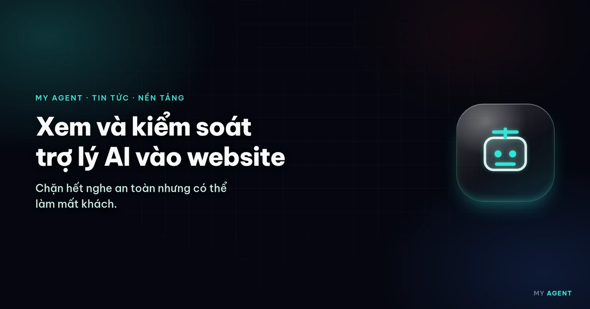
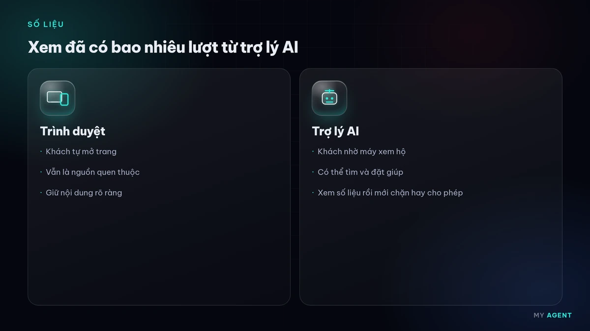
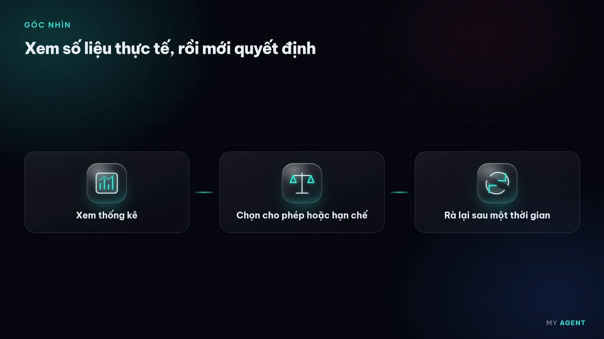

Có gì mới
Ngày 4/11/2026, Cloudflare, nhà cung cấp dịch vụ mạng phân phối nội dung (CDN) và bảo mật được nhiều website sử dụng, công bố hai nhóm tính năng mới dành cho lượt truy cập từ trợ lý AI cá nhân (personal agents). Đây là những trợ lý thay mặt người dùng vào website để so sánh sản phẩm, tìm bài hướng dẫn hay hoàn tất một đơn hàng.
Theo Cloudflare, với chủ website, các lượt truy cập này trước đây chỉ hiện chung là "truy cập tự động", nên khó biết chúng có ích cho việc kinh doanh hay đang gây rủi ro.
Thống kê riêng cho trợ lý AI
- Trong phần Security Analytics, biểu đồ phân tích bot có thêm nhóm Personal Assistants, nằm cạnh các nhóm bot đã xác minh, người dùng thật và truy cập tự động.
- Một ô thống kê mới liệt kê trợ lý nào đang ghé website và mỗi trợ lý gửi bao nhiêu yêu cầu. Lọc theo một trợ lý, chủ website thấy được trang nào bị truy cập, mã trạng thái trả về và mạng xuất phát. Nhờ vậy có thể biết trợ lý đó đang đọc trang sản phẩm, vào trang thanh toán hay gặp lỗi ở trang nào.
- Với website dùng tính năng chống lạm dụng tài khoản (đang thử nghiệm sớm), đội phụ trách có thể xem trợ lý nào đang đăng nhập thay cho tài khoản nào, và xử lý riêng một tài khoản đáng ngờ mà không phải chặn trợ lý đó với mọi người dùng khác.

Chính sách truy cập chi tiết hơn
Mùa hè vừa qua, Cloudflare đã cho phép đặt chính sách riêng cho bot AI phục vụ tìm kiếm, huấn luyện mô hình và hoạt động dạng trợ lý. Lần này, mục cài đặt được đổi tên thành AI Crawler and Agent access policies và cho phép chọn chính sách cho từng trợ lý được hỗ trợ: cho phép, chỉ chặn trên các trang có quảng cáo, hoặc chặn hẳn. Chính sách cho bot tìm kiếm và bot huấn luyện giữ nguyên.
Khi thêm một tên miền mới vào Cloudflare, hệ thống sẽ hỏi website có kiếm tiền từ quảng cáo hay không để gợi ý chính sách phù hợp. Cloudflare cho biết bước tiếp theo là tìm cách truyền thông tin người dùng qua trợ lý một cách tôn trọng quyền riêng tư, nhưng chưa công bố chi tiết.
Góc nhìn cho doanh nghiệp nhỏ
Nhiều website doanh nghiệp nhỏ đang dùng Cloudflare để tăng tốc và chống tấn công mà chủ web ít khi mở bảng điều khiển ra xem. Một vài việc nên làm:

- Nếu website dùng Cloudflare, hãy vào phần thống kê bot để xem đã có trợ lý AI nào ghé chưa và chúng thường vào trang nào.
- Kiểm tra lại chính sách cho bot AI hiện tại. Website bán hàng hay dịch vụ thường có lợi khi để trợ lý đọc được trang sản phẩm, bảng thông tin và trang liên hệ.
- Giữ thông tin trên website rõ ràng, có cấu trúc và cập nhật, để khi trợ lý AI đọc thay khách thì không bị hiểu sai.
- Nếu đơn vị khác đang quản lý website, hãy hỏi họ đã cấu hình các chính sách này ra sao trước khi thay đổi.
Nguồn tham khảo
- Cloudflare Blog – See the agents, set the terms (new visibility and control for personal agents) (mở tab mới) · 04/11/2026
blog.cloudflare.com/personal-agents-visibility-control/
Bài viết do My Agent tự biên soạn bằng lời của mình dựa trên các nguồn trên; nội dung gốc thuộc về nguồn. Từ khóa: cloudflare · tro-ly-ai · bot · website.